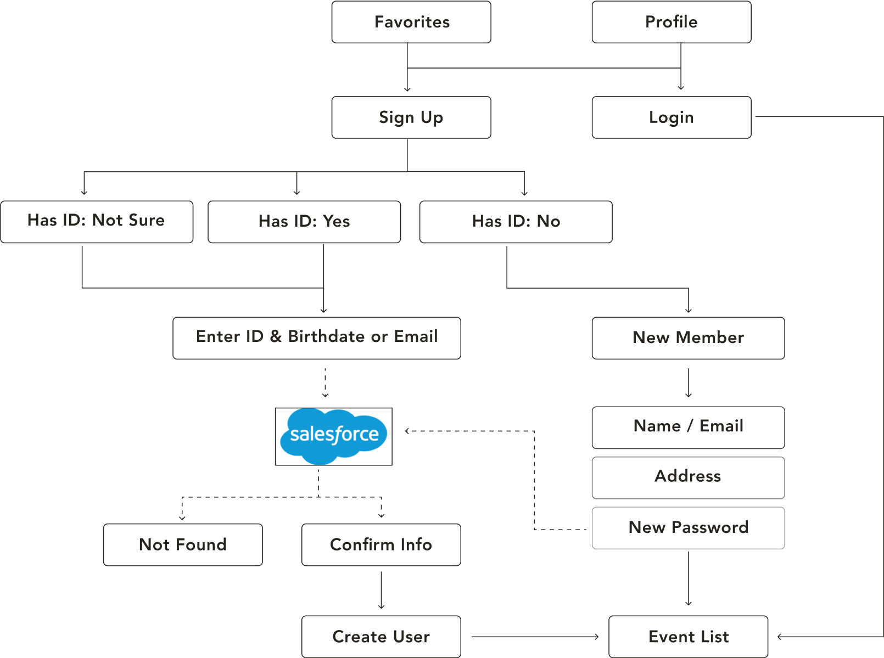

Intro
Helping young adults get access to Chicago’s performing arts scene. Our team worked with the client to build an iOS and Android application to imporove the current web-based system that young adults use to become members.
Work Covered & Teams
DEC 2018 - MARCH 2019 2 WEEK SPRINTS
This project covers the entire build phase for the iOS and Android applications.
Our team: Business Analyst, QA, Designer, Sr. iOS Engineer, Android Engineer, Scrum Master
Client team: Chief Financial Officer, Chief Communications Officer, Associate Director of Programs
Client Background
60 years of being in business. Founded to address the lack of artistic exposure in Chicago-area schools. Focused efforts on providing neighborhood schools with free tickets to attend musical recitals.
Challenges
Developing Android and iOS In Parallel. We needed to carefully plan our time in order to deliver both versions of the app and collaborate with our offshore team in South America.
Goals
Remove economic barriers for young adults. Provide yound adults with access to what events are scheduled, where they are, and when. Use technology to optimize engagement with young adults and create a modern, accessible experience.
Strategy
MARCH 18TH - 22ND, 2019
10
Gather materials for Android & iOS design standards.
Light feature and competitive analysis.
11
Create screen shot board of c ompetitor apps.
12
Analyze UI/UX of screen shots for competitor features.
Organize composition of notes for competitor screen shots.
13
Study interaction design of competitor apps.
Analyze research materials for Android & iOS design standards.
14
High-level application context map and share with whole team.
17
Gather research materials for target audience.
18
Research interaction design iOS & Android.
Outline key research findings.
19
Outline key research findings for target user group. Share with team in stand up.
20
Onboard client team to UX process.
21
High-level application context map.
Debreif
--
Context Mapping
Context Mapping Outcomes
Placing the user in the event list immediately after logging in. The events list is visible without having to log in. Notifications will trigger when the young adult is close to the ...

Framing the ideas for our approach
I put together a list of resources to learn more about young adults interacting with web and mobile apps. This kind of research helped set restraints and gave me and my team a basic understanding for some of the initial design concepts.
Reoccuring themes throughout the documented studies for young adults and technology often came to three main conclusions: young adults think they are web and mobile experts, though their usability test results are lower than average compared to adults. This is mostly due to lower literacy levels, less patience and lack of expereience with research, making them very susceptible to missing key information or details in an interface.
Tackling the biggest feature first
Being able to view the events list with our high-level context map in place, the first feature we thought about was the events list. This was the most complex feature of the app, pulling in data from Wordpress and allowing teens to save the events they liked in a personal list. having to log in.
The client team was thinking a lot about their users, and they were fixated on account creation as a prerequisite for using the app. However, they were open to feedback from our team about keeping the events list feature accessible without having to create an account. I eased their concerns by explaining that this change gives a person more control and a chance to establish value.
We also discussed interacting with the events. Initial concepts were liking an event, refreshing the list, viewing the event detail, and changing the order of how the events are listed.
Consistent Access To End-Users
The client has access to multiple users bi-weekly, providing a reliable source of user feedback. They agreed to designate a portion of the meeting to gather feedback on a sprint-by-sprint basis. We offered to be on site during meetings, but they felt they could take ownership of the questions and feedback. I suggested a Google Doc to add questions and collect responses.
First round of feedback
I started reporting the feedback in our stand-ups and summarizing what was recorded by the client. Our business team members took further action if scope began to expand.
We made sure the developers felt comfortable with any feedback that translated to extra functionality, and if it was possible or not to accommodate. The client felt strongly about using star icons for favoriting an event, while the teens unanimously felt it should be a heart.
Feedback
I started reporting the feedback in our stand-ups and summarizing what was recorded by the client. Our business team members took further action if scope began to expand.
We made sure the developers felt comfortable with any feedback that translated to extra functionality, and if it was possible or not to accommodate. The client felt strongly about using star icons for favoriting an event, while the teens unanimously felt it should be a heart.
Research
JANUARY 7TH - 18TH, 2019
25
Sketching & Design Iteration, Testing Planning.
26
Prototyping & Testing.
27
Design Iteration, Higher Fidelity Designs.
28
Add To/Update Prototype, Research (mobile usability).
29
Design Iteration & Feedback.
25
Add To/Update Prototype.
26
Design Iteration & Feedback.
27
Design Iteration & Feedback.
28
Research (Illustrations).
29
Client Meeting & Design.
Refining high-level concepts
We were able to make a lot of high-level descisions having a map of our features and the back-end layers visualized for the whole team. We ideated this flowchart based on the feedback we collected from the client team using Zeplin, a design handoff tool, to pose questions and generate ideas.
We were able to find direction for:
Decide the events list is accessible without having to log in. Determine technical requirements and specifications for Salesforce and Wordpress. Refine how notifications will work in the user journey. Being able to view the events list without having to log in. Placing the user in the event list immediately after logging in. When to prompt account creation or logging in. Technical requirements and specifications for Salesforce and Wordpress.
What We Know
Teens have to use a calendar that is overrun with duplicate dates for certain events. Teens suggested ordering the events list by date, projected popularity or shows they’ve seen before or favorited.
What we want to know
Do the teens feel they are getting enough value from the functionality of the events list that we are able to incorporate for version one? Out of all the feedback we received from the teens, what functionality should we prioritize in order to deliver an MVP that helps them find events that is improved compared to the current option?
Hypotheses
The biggest “asks” for this age group are filling out forms, specifically the user flow for creating an account and following detailed check-in instructions. We will need to ensure those steps have good system feedback, clear language and interactions that guide them so they are able to successfully attend shows, and our client is able to capture accurate data for shows attended by their teens.
Sign Up/Sign In Favorites
Testing our UX knowledge and understanding of young adults
After meeting with the client to discuss the requirements for log in and sign up, I learned more about the existing constraints for the teens as members of an organization. In order to make the process of adopting the app the primary conduit between the members and the organization, we needed to carefully guide the members to get the information we required at this crucial junction. We had to work with information that already existed in Salesforce, so the log-in requirements all had to depend on what was already available in the current database.
Our client explained that they intended to register new members for the program with the app and allow users who are existing members to bypass registration and only create an account to log in with. We also discussed the possibility of a user who “isn’t sure” if they’re a member of the program.
We created a collaborative file for everyone to add their ideas and ask questions about the log in user flow. zz and test with program members. The client was in charge, walking everyone through the clickable prototype during their bi-weekly meeting. The format for collecting feedback was done as a group. The teens felt the initial categorizing of the different member status and app account status made sense and the information asked of them was manageable. They asked for emojis to be used generously, particularly in this flow, “Replace the word ‘Yes’, ‘No’ and ‘Not Sure’ with emojis”.
The emojis presented a unique challenge. I was not ready to run with that idea without testing or observing their behavior, and with little time to budget for that, I had to consider the parents/guardians who also enroll teens into the program on the teens’ behalf. The solution was providing both text and emojis to make the log in user flow usable for everyone.
They had very specific feedback for language and tone. They liked certain copy, but also spoke up when it wasn’t working, “Sometimes it sounds like you’re trying too hard, like you’re way too excited.” There was a learning curve for the copy, but we got there eventually.
Finding ways to delight the client and users
I always try to find a way to add extra value for the client. In this project I took inspiration from the client’s lively branding identity and created several illustrations for the app to complement their branding. The client was a bit hesitant about the concept of additional graphic material that was purely aesthetic, but also not reluctant to share the idea with the teens. There was overwhelming positive feedback for the “avatars”, and the client was onboard from then on. The emojis and illustrations gave me a chance to explore social accessibility. In a short time I learned about making inclusive decisions and representing a wider ethnic and social spectrum. I now have a new breadth of knowledge for the social sciences in UX that I didn’t before.
Hypotheses
The biggest “asks” for this age group are filling out forms, specifically the user flow for creating an account and following detailed check-in instructions. We will need to ensure those steps have good system feedback, clear language and interactions that guide them so they are able to successfully attend shows, and our client is able to capture accurate data for shows attended by their teens.
Event Detail & Check In
FEBRUARY 4TH - 20TH, 2019
04
Research (iOS Features/Apps Integration)
05
Prototyping & Testing<./p>
06
Design Iteration & Feedback.
07
Add To/Update Prototype, Research (mobile usability).
08
Research (inclusive design).
11
Sketching & Design Iteration.
12
Design.
13
Research (iOS & Android Keyboards).
14
Research (inclusive design).
15
Client Meeting & Design.
18
Testing Planning.
19
Prototyping & Testing.
20
Design Iteration & Feedback.
Learning to check our assumptions
The event detail is the in-depth view of a specific event. The client’s current web version of the event detail does not have any hierarchy or structure for the information about the show. Our client felt condensing everything down to mobile was a daunting task. We started by asking the teens which information they wanted to prioritize. I broke the information into sections and worked with the client to keep each section lean, only including the most vital information. The teens prioritized everything with visual mock-ups. We wanted them to be able to pick and choose what appeared above the fold while taking into account mobile device variances.
We went through several iterations of the design for this screen. I worked closely with the client to ensure very specific questions were asked during group meetings with the teens. I was not familiar with their experience with the theater box offices, so this was a chance for me and the client to collect insights for the event details’ functionality. One of the biggest insights gained was the teens’ underwhelmed response to a calendar to interact with for show dates. I was so sure they were going to be thrilled to have one in the event detail to browse show dates with.
The scrum master kept me and the client honest; the calendar was a difficult feature and I hadn’t offered any other option. I simplified the calendar to show a list of show dates with the full run of the show. Turns out this is what the teens actually wanted, explaining that it was “just faster”. Remembering this assumption has given me a new perspective for subsequent projects: when it comes to complex features, ensure that the end-users are directly consulted because they may not want the fanciest version.
We were able to find direction for:
I always try to find a way to add extra value for the client. In this project I took inspiration from the client’s lively branding identity and created several illustrations for the app to complement their branding. The client was a bit hesitant about the concept of additional graphic material that was purely aesthetic, but also not reluctant to share the idea with the teens. There was overwhelming positive feedback for the “avatars”, and the client was onboard from then on. The emojis and illustrations gave me a chance to explore social accessibility. In a short time I learned about making inclusive decisions and representing a wider ethnic and social spectrum. I now have a new breadth of knowledge for the social sciences in UX that I didn’t before.
The most significant experience divergence from the members’ typical routine was the addition of checking in with the app. The client and I found this challenging since the collection of data about shows the teens attended was purely a business benefit. There would be no way for us to control if the teens who purchased tickets online checked themselves in and bypassed the box office. Our team and the client discussed options to balance the logistics, arriving at a set of rules that would cover most situations, but were also forgiving.